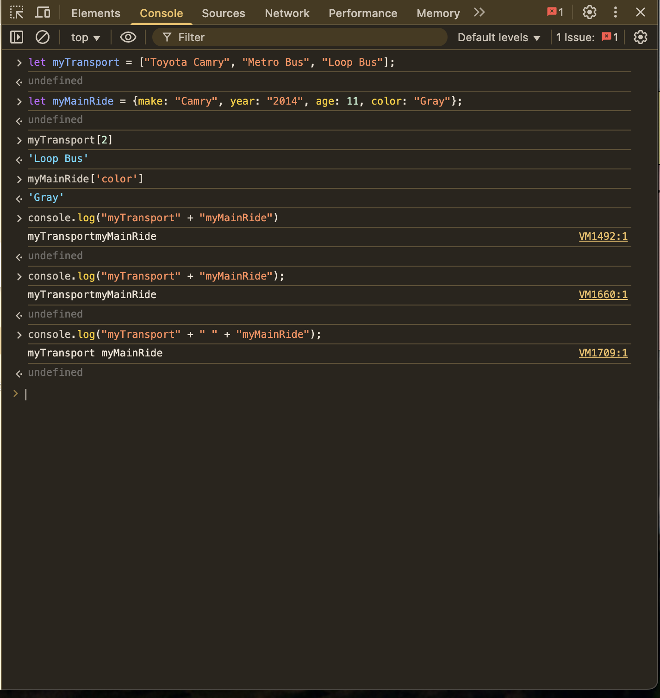
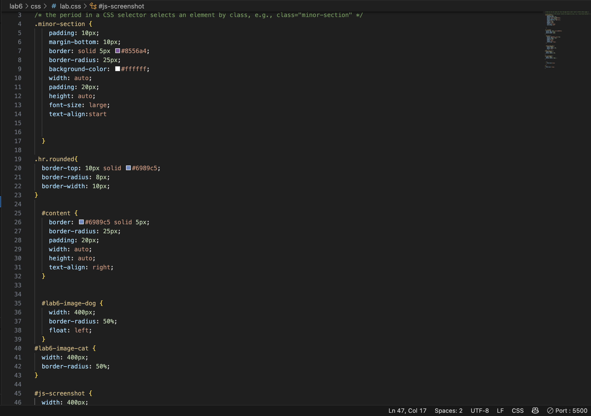

Lab 6 - Arrays and Objects
Challenge
The challenge for this lab was to practice using the JavaScript console to get comfortable using Arrays and Objects.
Problems
One of the probelms that I had for this lab was getting my image to float because as you can see, it is floating on top of my text boxes rather then being imbeded into my text. I am still trying to figure out how to fix that.
Reflection
For this assignment I had an easier time practicing arrays and objects on JavaScript and transfering it onto HTML. Since I didn't confront too many problems with that main part of the lab, I was able to spend more time on CSS and practicing the small details.
Results
Below in Script Output, you will see my results of using Arrays and Objects. I also included a picture of the steps I took on a console to prepare for the lab as well as my work on the CSS file.
 